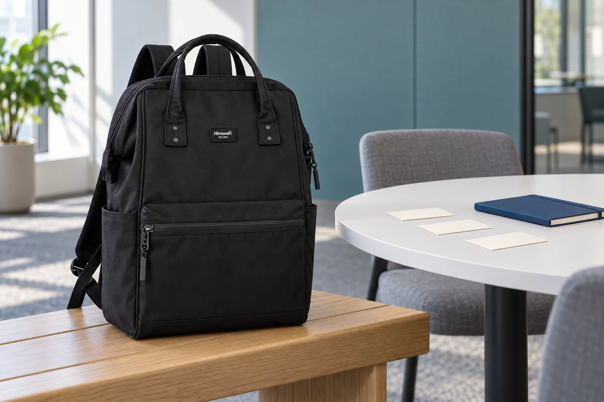

회의실로 옮길 때 백팩을 손에 들까, 등에 멜까

회의실로 백팩을 옮길 때에는 손에 남을 자료부터 봅니다. 한 손에는 노트북, 다른 손에는 가방이 있으면 문 앞에서 자료를 어디에 놓을지부터 고민하게 됩니다. 반대로 기기와 자료를 가방 안에 정리할 수 있다면 두 어깨에 메고 이동하는 편을 고를 수도 있습니다. 이동 거리에 손의 역할을 더해보면 자신에게 맞는 운반 방법을 정하기 쉽습니다.
짧은 이동용 구성을 생각할 때는 지금 손에 들려는 물건을 책상에 나란히 놓아봅니다. 백팩과 닫힌 노트, 기기처럼 각각 잡아야 하는 물건을 구별합니다. 모든 물건을 한 손에 모을 수 있다는 생각과 문을 열고 의자를 빼는 동안에도 그 상태를 유지하는 일은 다릅니다. 도착지에서 가장 먼저 내려놓을 것이 무엇인지 정한 뒤 출발할 때의 자세를 골라봅니다.
백팩을 손에 들면 남는 손은 하나
제품이 운반용으로 안내한 손잡이를 쓰는 경우에도 다른 손에 무엇을 들지 봅니다. 손잡이를 쥐고 노트까지 같은 손가락에 걸면 가방을 내려놓을 때 둘을 따로 다루기 어렵습니다. 노트를 가방 안에 넣을 수 있는지, 노트만 다른 손에 둘지 실제 구성으로 비교합니다. 가방의 장식이나 지퍼 손잡이를 본체를 드는 곳으로 바꾸어 쓰지는 않습니다.
같은 층의 탁 트인 공간을 바로 건너갈 때와 여러 문을 통과할 때는 다른 선택이 가능합니다. 문을 열 손이 필요하면 멈추어 가방을 내려놓을 곳이 있는지 봅니다. 그 자리가 없다면 출발할 때 등에 메는 방법을 검토할 수 있습니다. 손에 드는 방식을 고른 뒤 불편한 동작을 계속 덧붙이기보다 이동 중 반복할 일을 먼저 세어보는 것입니다.
가방을 손에 든 채 팔을 크게 흔들면 본체가 다리나 주변 사람 쪽으로 움직일 수 있습니다. 좁은 통로에서는 현재 가방이 차지하는 폭을 보고 몸 가까이 다룹니다. 손목이나 손가락으로 다루기 어렵게 느껴지면 내용물을 다시 나누거나 제품에서 안내한 착용 방식으로 바꿉니다.
등에 멜 때는 자료를 넣는 시간이 생긴다
백팩을 메고 이동하려면 먼저 내용물을 이동할 상태로 정리해야 합니다. 쓰던 기기의 연결을 안내에 맞춰 마치고 자료를 닫습니다. 노트북 위에 마우스를 얹은 채 가방에 밀어 넣기보다 각각의 보관 자리를 사용합니다. 기기를 정리할 시간을 아끼려고 열린 가방을 한쪽 어깨에 걸면 도착해서 다시 내용물을 확인해야 할 수 있습니다.
등에 메기로 했다면 회의실에서 어느 물건부터 꺼낼지까지 정해둡니다. 짧은 회의에 필요한 노트 하나가 주수납부 맨 아래에 있으면 도착해서 다른 짐을 옮기게 됩니다. 이미 가진 파우치와 자료 묶음을 활용해 오늘 필요한 범위가 먼저 나오게 바꿀 수 있습니다. 이동 중 손이 비어 있는 이점과 도착 후 여는 동작을 함께 비교하는 편이 실용적입니다.
Himawari No.1884 제품 정보의 검정 제품 원본에서는 어깨에 멘 본체와 위쪽 손잡이를 볼 수 있습니다. 손으로 드는 모습과 등에 멘 모습 가운데 무엇을 자주 쓸지 생각할 자료입니다. 확인된 외부 크기는 가로 30 × 세로 45 × 폭 20cm입니다. 이 숫자로 손잡이의 허용 하중이나 기기의 내부 수납을 판단할 수는 없으므로 실제 짐과 운반 안내를 별도로 대조합니다.

회의실 문 앞과 의자 옆에서 바뀌는 선택
도착한 방에서 가방을 둘 면이 좁다면 손에 들고 들어온 뒤 바로 내려놓는 동작부터 생각합니다. 안내된 보관 위치에 본체가 놓이고 끈이 통로로 나오지 않는지 봅니다. 책상 위에 기기를 먼저 놓아야 한다면 가방을 먼저 둘지 순서를 바꿀 수 있습니다. 책상까지 한 번에 모든 짐을 옮기는 것이 편한지, 두 번 나누는 편이 나은지는 공간에 따라 달라집니다.
등에 멘 상태로 앉으려다 가방을 뒤늦게 벗으면 등받이와 옷 사이가 좁아집니다. 의자에 앉기 전에 가방을 내릴 공간을 보고 한쪽씩 끈을 빼면 필요한 범위를 알아보기 쉽습니다. 손에 든 자료가 있다면 내려놓은 뒤 가방을 벗는 순서도 가능합니다. 앉은 뒤 사용할 자료를 찾을 때 가방 전체를 무릎으로 들어 올려야 하는지까지 이어서 봅니다.
회의를 마친 뒤 다른 방으로 곧장 이동하는 날에는 같은 운반법을 계속 고집할 필요가 없습니다. 첫 이동에서는 손에 들었어도 다음에는 서류가 늘고 문을 더 지나갈 수 있습니다. 쓰던 물건을 보관한 뒤 손에 남은 짐의 수를 다시 봅니다. 백팩 하나만 보고 자세를 정하지 않고 현재 들고 갈 묶음을 기준으로 바꾸는 것입니다.
한 번 바꾸어 볼 것은 운반 방식 하나
평소 짐을 그대로 둔 채 집이나 여유 있는 사무실 공간에서 두 방식을 비교해볼 수 있습니다. 손에 들고 몇 걸음 옮긴 뒤 내려놓고, 같은 짐을 넣은 가방을 메었다가 내려봅니다. 무엇을 먼저 놓아야 했는지와 문을 여는 손이 남았는지를 기억합니다. 이 비교에서 지퍼 위치나 물건 배치까지 한꺼번에 바꾸면 어떤 변화가 도움을 주었는지 구별하기 어렵습니다.
실제 업무에서는 이동을 마친 뒤 정리할 장소가 달라질 수 있습니다. 회의실을 나서며 바로 전화를 받는 상황이 잦다면 그 물건을 꺼낼 자리를 유지합니다. 반대로 도착할 때까지 가방을 열 일이 없다면 쓰던 도구를 모두 정리해 메는 선택을 검토합니다. 자신이 자주 멈추는 지점 하나를 기준으로 운반법을 고르면 다음 이동에도 같은 조건을 비교할 수 있습니다.